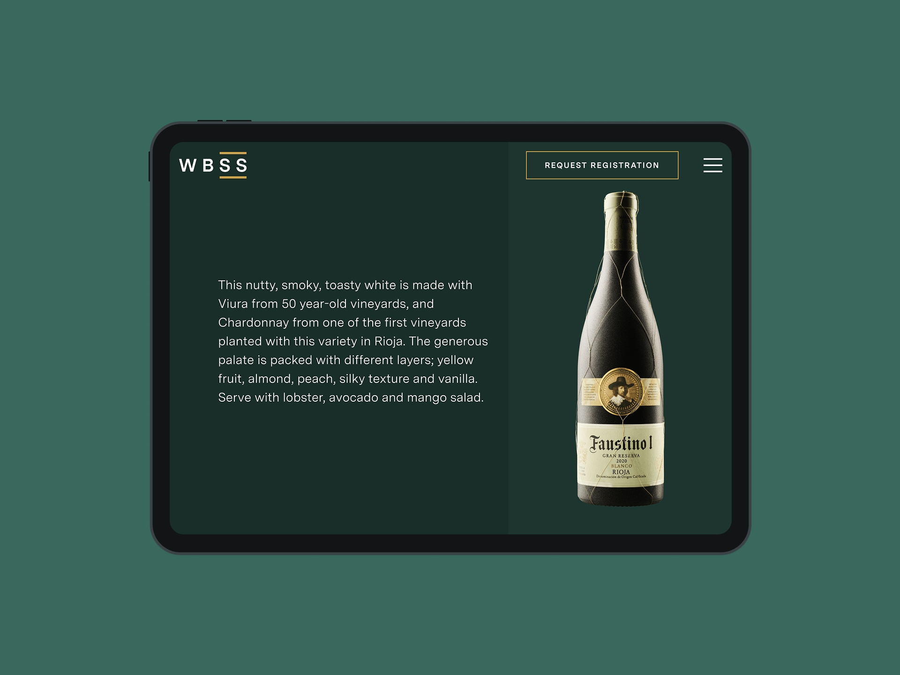
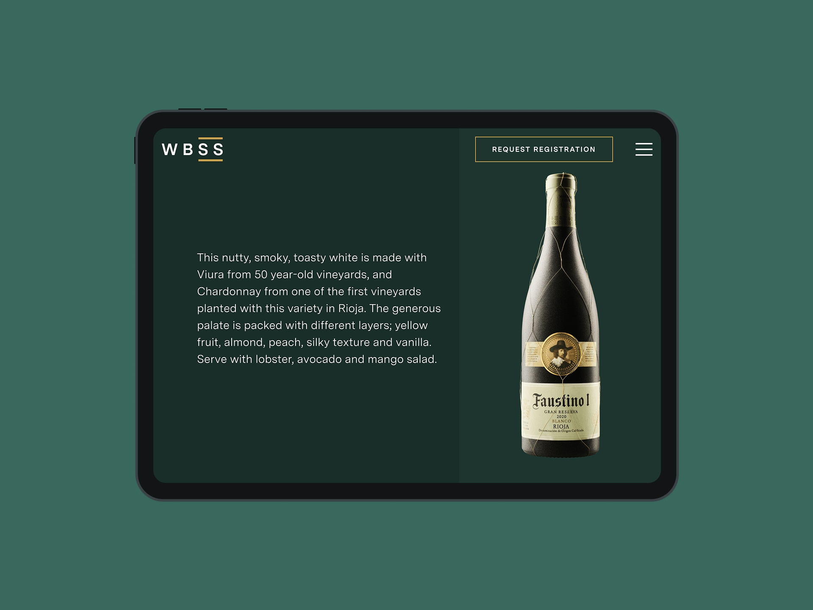

The Event
This was the first year of the event, with no existing website or user journey in place. The entry process was highly selective, and the organisers needed a way to communicate that exclusivity while still encouraging the right professionals to apply. I was responsible for designing the full experience from the ground up, from content structure to front-end delivery.
Registration Flow
I began by mapping the journey that mattered most to the organisers: the path from a first visit to a completed entry. Using a detailed flow diagram, I tracked each touchpoint, from website entry through to checkout. This checkout flow became the site’s primary KPI, shaping each design decision and ensuring that no interaction detracted from that end goal.
The Wine Selection
Beyond the entry flow, the event director pushed for a second, equally crucial experience: a way for visitors to discover shortlisted wines through exploration. He envisioned something closer to a sommelier’s tasting menu, rather than a tradional e-commerce experience. I proposed a dynamic tagging model. Instead of users filtering through rigid drop-downs, the site would surface story-driven tags, regional lore, unexpected pairings, alongside practical descriptors like varietal, vintage, and year.
To validate the idea, I built a dedicated wireframe sequence for the wine-selection page. The layout presented an evolving web of tags that users could follow intuitively, revealing wines through narrative threads rather than categorical checklists. The event team could curate and add tags in the CMS, letting the stories grow organically as new entries arrived. Early stakeholder reviews confirmed that this approach not only echoed the intimacy of fine-dining service but also encouraged deeper engagement and longer session times.
The Sommeliers' list and profiles
I also designed and built the internal pages of the site, with a particular focus on the Sommeliers’ list and individual wine profiles.
The Sommeliers’ page introduced the judges behind the wine selection. Each sommelier had a dedicated biography showcasing their experience, credentials, and role in the industry. This section played a key role in the first phase of the site launch, helping to build credibility and drive interest ahead of the entry period.
Wine profile
Once the final selection was announced, the wine profiles were published. These pages gave users the chance to explore each chosen wine in detail, supported by high-quality bottle photography and links to the vineyard websites. The design needed to match the premium tone of the event while also serving a commercial purpose, with entrants expecting their products to be professionally presented and promoted as part of the selection.
 

In addition to the design, I also led the front-end development, crafting responsive HTML and CSS templates that were later integrated into the Webpuzzle CMS by the back-end team. This handoff required close collaboration to ensure that the subtlety of the design system translated across devices and platforms.
Ultimately, the site served as more than just a promotional piece. It became a curated stage for excellence, one that invited the right people to showcase their wine and expertise.